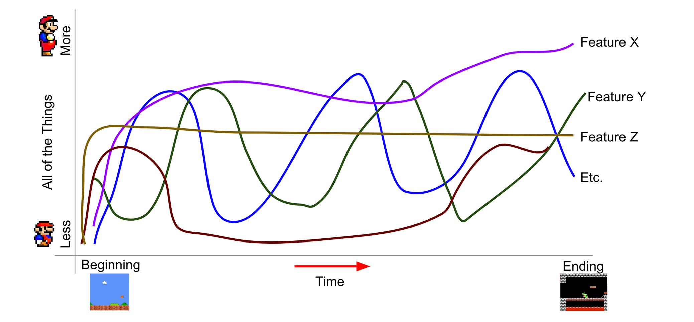
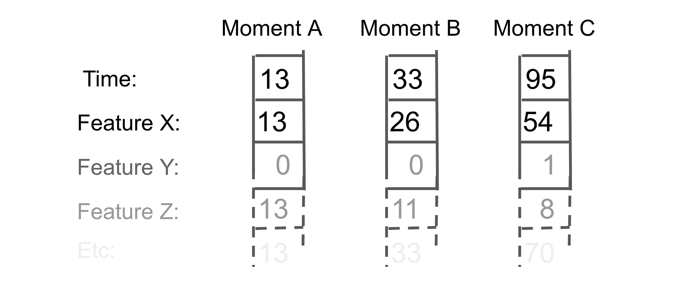
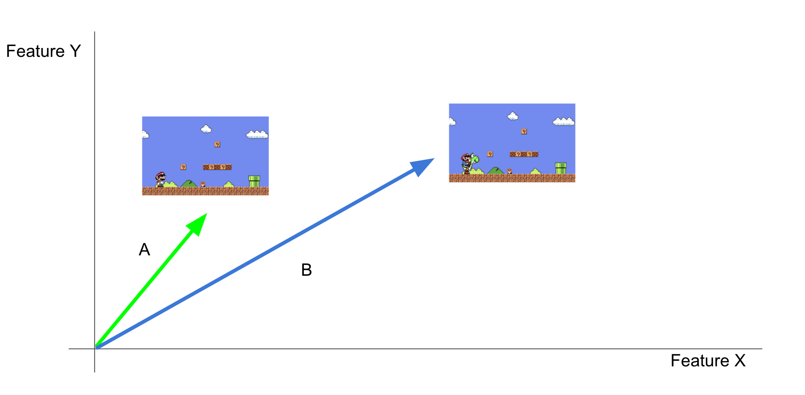
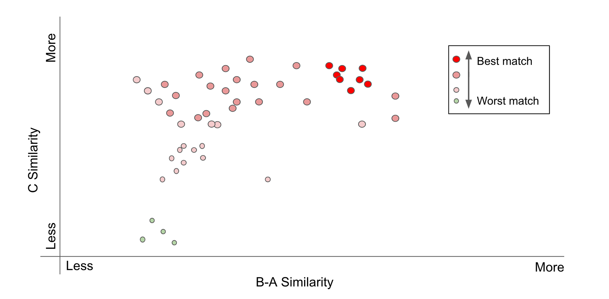

Introduction to Search by Analogy (with Videogames)
by Barrett Anderson, Kevin Lim, and Adam Smith May 2019
Imagine the moment that fills in the bottom right blank:

The primary difference between the top two moments was that Mario was on foot (left) or riding Yoshi (right). The difference between the two moments on the left was that Mario was outdoors with a goomba (top), or indoors with Bowser (bottom). You were probably able to solve the analogy above, by imagining something like this to fill in the blank:
In this analogical solution, Mario is indoors with Bowser (as on the bottom), and riding Yoshi instead of on foot (as on the right). If you’re a Mario fan you probably also noticed that these images aren’t from a real Mario game, but I bet that did not make it any harder for you to solve the analogy.
This kind of analogical reasoning is easy for humans to do, but hard for them to explain, and it is not obvious that a machine can do it at all. Below, we show how a computer can be trained to understand this analogy, and provide a few interactive examples.
Why Search by Analogy (with Videogames) Matters
Media, including videogames, is an important part of our lives, and thinking about media critically is important. Search by analogy is a tool for game scholars and critics that will make new kinds of analysis possible.
Often when you conduct a web search or when you use a keyboard with predictive text, you are benefiting from the same underlying technology (word embeddings) that makes search by analogy possible. Videogame moments are a new place to experiment with these ideas, and what we learn in these experiments might have applications in other domains (e.g. text, music, images, video, etc.).
Parameterizing Videogame Moments
To a human player, each moment in a game has many features, but those features can also be broken down into numbers. In a Mario game this could include things like the number of coins collected, the number of enemies on the screen, the number of lives remaining, score, and so on:

These are all the sort of things that we might pick out as features for a Mario game, but from now on let’s treat each of these as something a little more abstract (Feature X, Feature Y, etc.). The rest of this explanation works even if we have no idea what any of the individual features mean (e.g., if they are for an unfamiliar game, or if they were generated by machine learning). If we look at a graph of gameplay over time, we can see how each moment is a combination of these features:
We can assign a numeric value to each feature and create a vector (list) of numbers to represent any specific videogame moment. Now each individual moment is just a long list of numbers:
Credit to Adrian Colyer for inspiring this illustration.
Videogame Moment Search by Analogy
So, why did we bother turning each moment in the game into a list of numbers? In short, because now we can do interesting things to these moments (with math). This is the first step in teaching a computer to understand an analogy, like the example at the top of this page. In reality our vectors will contain values for many features, but it will be easier to illustrate the rest of this explanation if we pretend that they only have two. In that case, our videogame moment vectors might look something like this:
We can imagine a graph with Feature X (on the x-axis) and Feature Y (on the y-axis). If the game had only these two features, every possible moment would exist somewhere on this 2D graph. This is a representation of the abstract space of all of possible game states. (This is also why we had to simplify - if every feature in our vector added another dimension to this graph it would very quickly become impossible to draw it on the page.) So, sticking to this simplified version, we can put Moment A and Moment B vectors from the example at the top of the page on this graph.
Here’s the first part of how the search-by-anlogy trick works:
We can take the difference between the Moment A vector and the Moment B vector to get a new vector (B-A) that removes what they have in common (Mario outdoors), but leaves intact what is distinct between them (on foot vs on Yoshi). The result of this operation (B-A) is a difference vector that, in this case, we think represents something like the Yoshiness of that moment.

Here’s the second part of the search-by-analogy trick:
Now that we have a difference vector representing something like Yoshiness(B-A), we can add it to a moment that has no Yoshi in it (Moment C, from our example above), and hopefully find an equivalent moment with one crucial difference (the solution of to the analogy above, Moment C + Yoshi).
That is the essence of videogame moment search-by-analogy, but there is one final important wrinkle, which is the part that makes this search. Although we can imagine a graph that contains all possible moments in a game, for most games we are only ever going to be working with a small sample of those moments. What if the moment we are looking for doesn’t exist in that sample? What if the moment that we are looking for isn’t even possible?
In this case, we still add the difference vector (B-A) to another (Moment C), but instead of giving us the answer this creates a query vector.
Now that we have a query vector we can compare it to all of the moments that exist in our sample (represented as dots on the graph below). The single closest moment is our analogy search result, Moment D.
That is all there is to search-by-analogy.
There is one more trick we can do that will make our graph more useful. Right now the axes are not very meaningful, but we can change that by rotating and transforming the graph. One way we can do this makes resemblance to the Moment C vector vertical (as measured by cosine similarity), and resemblance to the B-A difference vector horizontal. This gives us a y-axis that tells us how similar each moment is to Moment C, and x-axis that tells us how much of the B-A distinction that we defined (e.g., Yoshiness) each moment has. We can also include how similar each moment is to the query vector, encoded in the size and color of each dot.
The interactive below contains examples of a search-by-analogy success for a couple of games. All of the moments used came from a human playthrough of each game (Super Mario World and Super Metroid). The graph shows, for every moment in the sample, its similarity to the difference vector (B-A, on the x-axis), its similarity to Moment C (on the y-axis) and how close it is to the query vector (dot size and color). You can scroll around the graph and mouse over any moment for more detail. You can also make your own queries (changing Moments A, B, and C) and see what happens:
What's New About Search by Analogy (with Videogames)
This is a combination of two old ideas, applied to a new domain. The first concept is that it is possible to represent many different kinds of things as vectors in an abstract space. Words, faces, and many other things can all be turned into vectors embdeded in an appropriate space.
The second important concept is that the relationships between these vectors can be meaningful. The most famous result here is "King - Man + Woman = Queen", where a mathematical relationship between word vectors captures an analogical relationship between words.
Before now, these ideas had not been applied to moments in a videogame. Only recently has the work been done to create an abstract space for embedding videogame moments, and possible applications are still being explored.